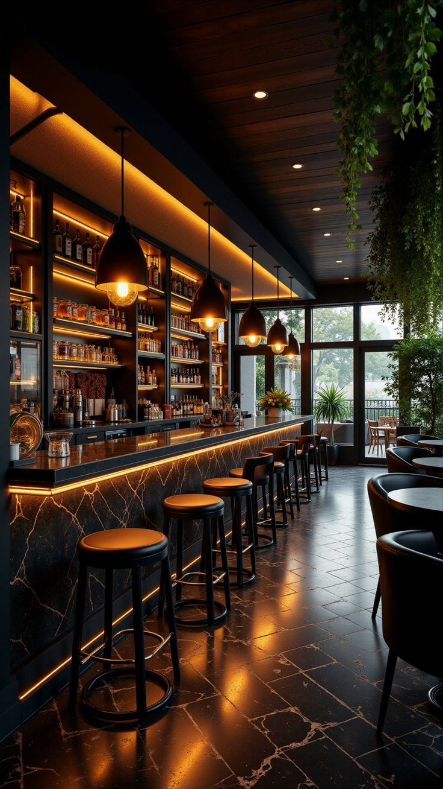
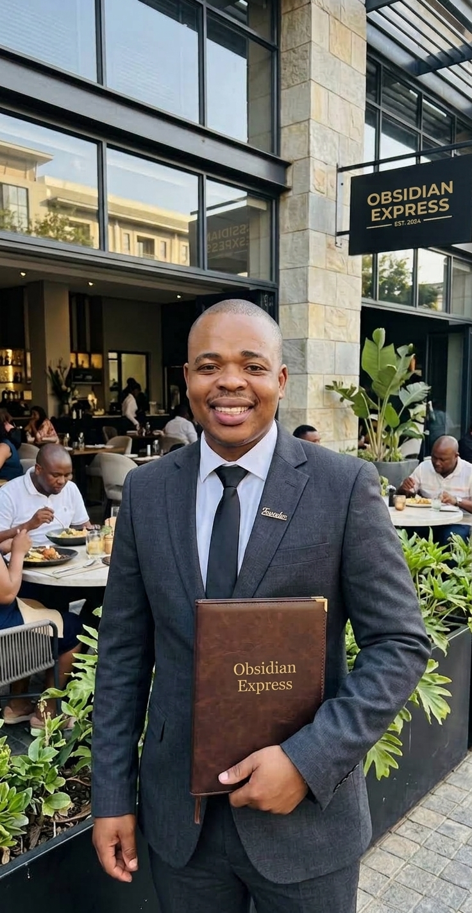
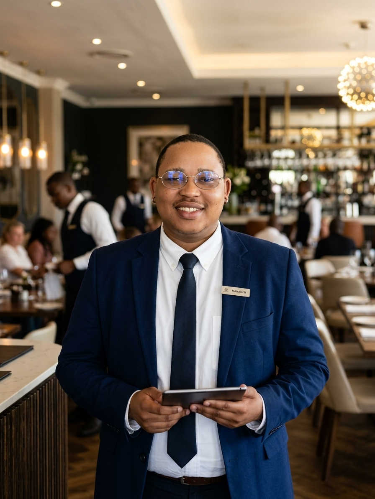
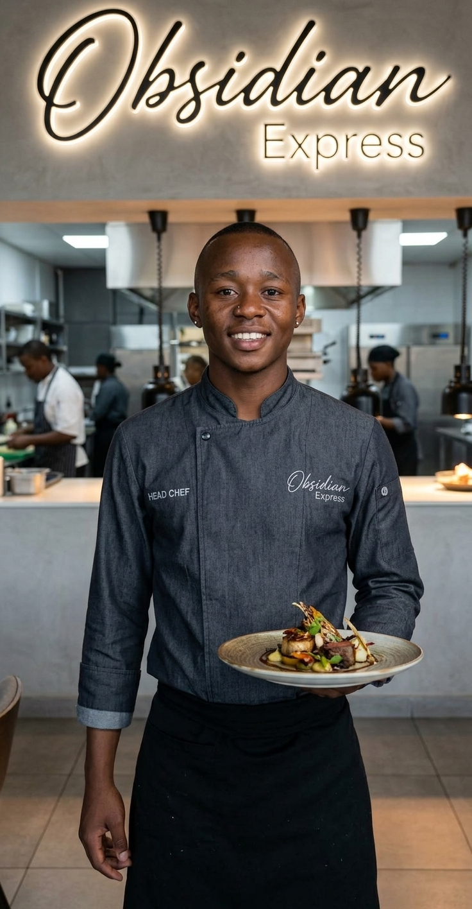

About Us
Welcome to Obsidian Express! We are a team of passionate chefs and food enthusiasts dedicated to bringing you the best of South African cuisine. Our mission is to provide a unique dining experience that combines traditional flavours with modern culinary techniques. Let us take you on a culinary journey through the heart of South Africa — meet our team and learn about the passion behind every dish.

Our Story
Obsidian Express was founded in 2026 with a vision to create a dining experience that celebrates the rich culinary heritage of South Africa. Our founder, Mr Athi Mavovana, who comes from a diverse background in the food industry, wanted to create a space where people could enjoy authentic South African dishes made with fresh, locally sourced ingredients. In the past few months we have grown into a beloved establishment known for our commitment to quality and innovation in the kitchen — because fast food doesn't have to lose its elegance.

Founding Member
Athi Mavovana — founded Obsidian Express to bring authentic, locally sourced South African flavour to fast dining.

Restaurant Manager
Nande Mavovana brings years of hospitality experience, ensuring every guest has a memorable dining experience.

Head Chef
Yonwaba Bewana leads our kitchen with a passion for showcasing the best of South African cuisine, both delicious and visually stunning.
What We Stand For
We source ingredients from local suppliers wherever we can, so every plate supports South African farmers and tastes as fresh as it should.
Fast food does not have to lose its elegance. Our kitchen is organised so dishes are fired quickly and plated precisely for people on the move.
From kota to mogodu, our menu honours the dishes that South Africans grew up with and introduces them to a new audience.
Frequently Asked Questions
We are at 50 Stiemens Street, Floor 8, Braamfontein, Johannesburg. See the contact page for a map.
Monday to Friday 10:00 – 21:00, and Saturday to Sunday 11:00 – 22:00.
Yes. Use our enquiry form for an instant estimate. Catering needs at least 48 hours’ notice.
The braai plate is served Friday to Sunday. All other dishes are available daily during opening hours.